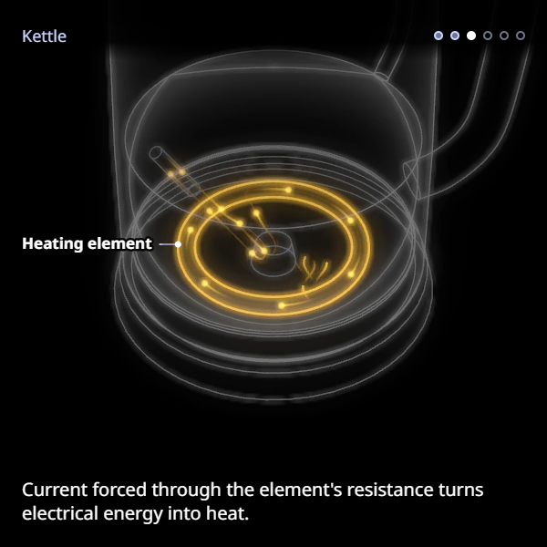
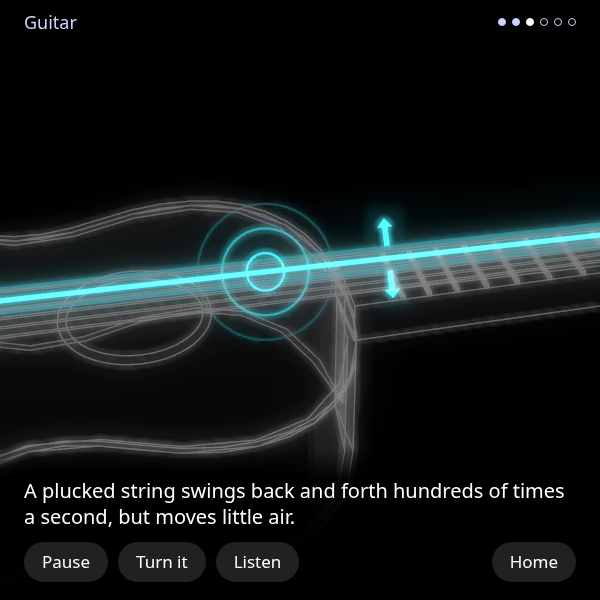
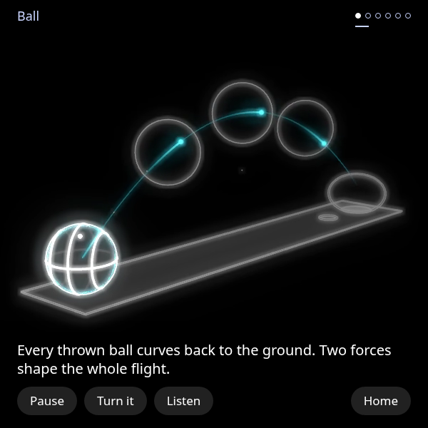
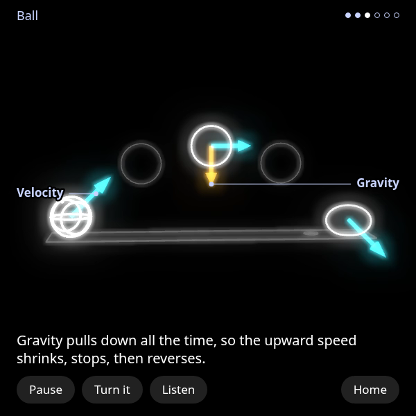
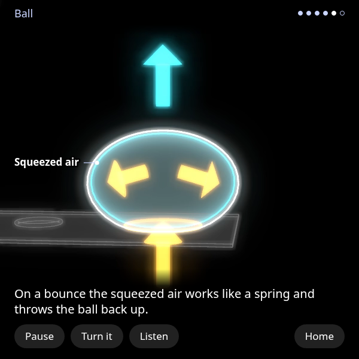
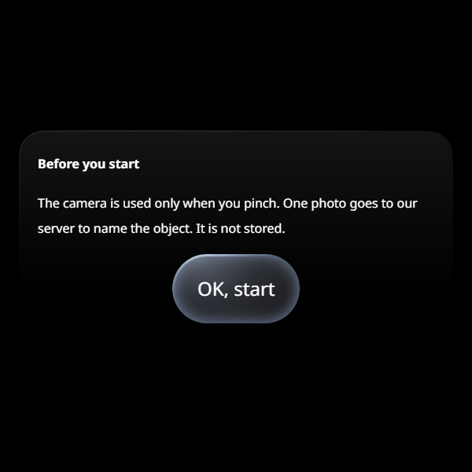
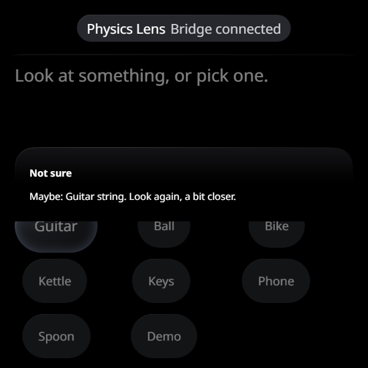
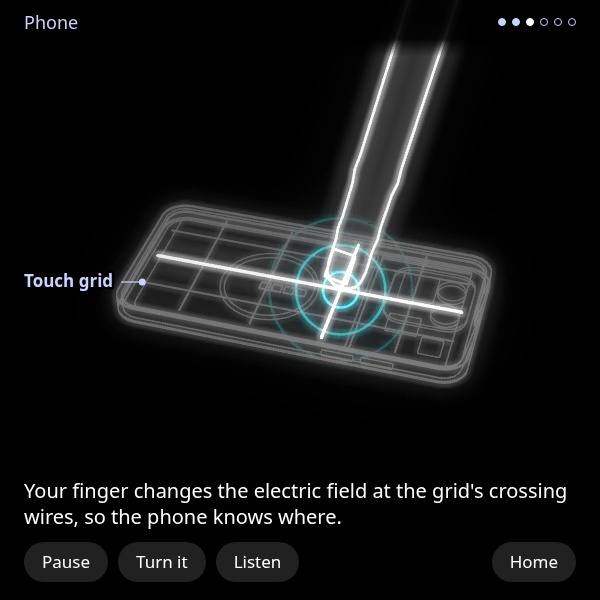
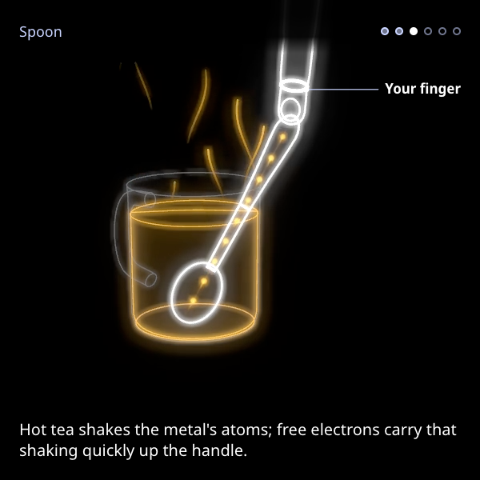
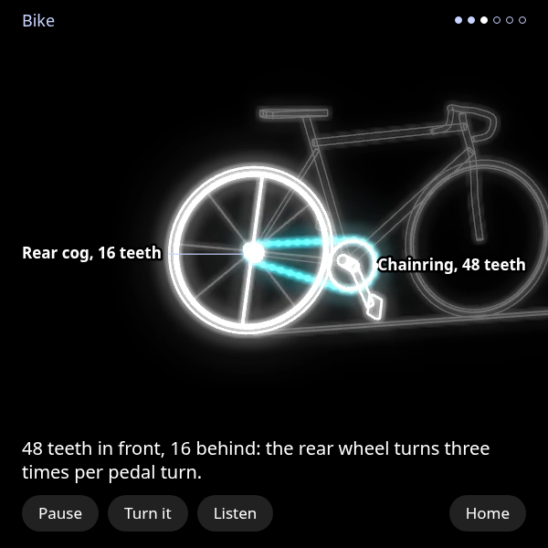

Look at something. Ask why.
See the physics drawn in your lens.
For Meta Ray-Ban Display and the Meta Neural Band

Our assumption. We have not run a user study.

You have to describe what you are looking at, and your hands leave the object.
A spoken answer. Good, but you cannot see the mechanism.
One photo of what you hold. A 3D line drawing of the hidden mechanism, over the real thing. Hands stay free.
Built for the 600 × 600 additive display: black is see-through, so only bright lines are drawn. Not a mirrored phone screen.



Ball, steps 1, 3 and 5 (state-suite screenshots, headless Chrome at 600 × 600; not photos through glasses). Swipe changes the lens, "Turn it" spins the live 3D model, a follow-up question jumps to the right step.
Band pinch → glasses photo → Android → Gemini → display worked once. Photo to phone 5.6 s over Bluetooth. Live 3D appeared 1.5 s after the pinch (wearer-reported).
In other attempts Bluetooth dropped right after the photo. Frame rate and long sessions on the glasses: not measured.
Detect today: ~1.8 to 1.9 s on the server (gemini-3.5-flash, two samples); end to end depends on the network.
The model only picks the object and answers questions; nothing is generated per request, so after recognition everything is fast. 30 fps scenes were measured in desktop headless Chrome, not on the glasses. Bridge: 93 tests pass; Android: 172 JVM tests.
Judging bridge is open with a per-IP rate limit and will be re-locked afterwards.


Pilot target: one science centre gallery or one physics class, 10 to 20 objects, before and after quiz.
Proposal only. No venue has been contacted and no pilot has run. Translations are machine-made.



Live camera emulator: your camera, the real glasses Web App, live 3D lines.
lens.167-71-139-39.sslip.io/emulator
Code: github.com/IceFrosst/WonderWhy
Team: Alex (MrNetwork) · IceFrost · IdelicMemor
Scan to open the emulator